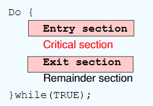
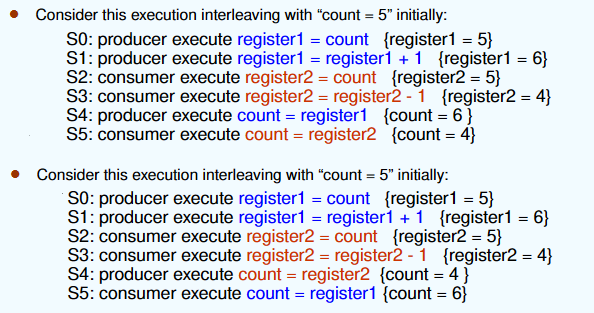
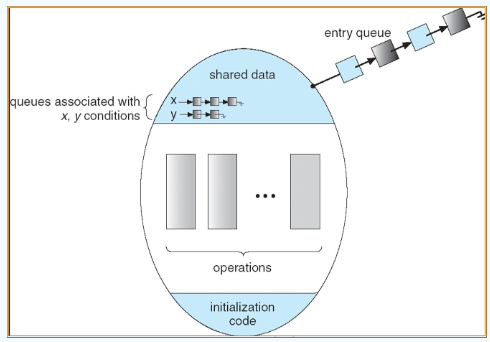

约 2079 个字 293 行代码 4 张图片 预计阅读时间 14 分钟
Chap 6 | Process Synchronization
章节启示录
本章节是OS的第六章。
1.Background¶
一些定义¶
- 临界资源：一次仅允许一个进程使用的资源。
- 临界区：进程中访问临界资源的那段代码。
- 进入区：为了进入临界区使用临界资源，在进入区要检查可否进入临界区，若能进入临界区，则应设置正在访问临界区的标志，以防止其他进程同时进入临界区。
- 退出区：将正在访问临界区的标志清除。
- 剩余区：代码的其余部分。

几个例子：是否为临界资源
全局共享变量？是
局部变量？ 不是
只读数据？ 不是
CPU？ 不是（不需要同步机制来保护）
- 同步（直接制约关系）：为完成某种任务而建立的两个或多个进程，这些进程因为需要协调它们的运行次序而等待、传递信息所产生的制约关系。
- 互斥（间接制约关系）：当一个进程进入临界区使用临界资源时，另一个进程必须等待，当占用临界资源的进程退出临界区后，另一进程才允许访问此临界资源。
进程同步的例子
进程同步是指在多进程或多线程环境中，为了确保多个进程或线程能够按照一定的顺序或条件正确地访问共享资源而采取的各种协调机制。
- 使用count来追踪整个buffer
- 生产者生产后count++
- 消费者消费后count--
进程互斥的例子 Race Condition （竞态条件）
竞态条件是指一个内存位置被并发访问，并且至少有一次是写访问。
-
count++ could be implemented as
- register1 = count
- register1 = register1 + 1
- count = register1
-
count-- could be implemented as
- register2 = count
- register2 = register2 - 1
- count = register2
如果在抢占式中打乱顺序就会出错

对于访问共享的内核数据(shared kernel data)，非抢占的内核是否受竞态条件(race conditions)的影响？
多核情况下，两个进程同时运行时还是有可能出现竞态条件。
实现临界区互斥必须遵循的准则¶
- Solution to Critical-Section Problem：(需要满足以下三个条件)
- Mutual Exclusion（互斥）：如果进程Pi在它的临界区执行，那么没有其他进程可以在它们的临界区执行。
- Progress（空闲让进）：如果没有进程在其临界区执行，并且有一些进程希望进入其临界区，那么下一个进入临界区的进程的选择不能无限期推迟。
- Bounded Waiting（有限等待）：在一个进程请求进入其临界区之后，在该请求被批准之前，允许其他进程进入其临界区的次数必须存在一个界限
- 让权等待（原则上应遵循，非必须）：当进程不能进入临界区时，应立即释放处理器，防止进程忙等待。
以下将介绍实现临界区互斥的几种基本方法
2.软件方法¶
2.1 单标志法¶
设置公共整型变量turn，指示允许进入临界区的进程编号
turn = i时，允许Pi进入临界区
进程退出临界区时交给另一个进程turn = j
-
Process Pi:
-
Process Pj:
Mutual Exclusion? Yes
Progress? No
Bounded Waiting? Yes
可实现两个进程轮替进入临界区
必须轮替进入，不满足空闲让进（若某个进程不再进入临界区，则另一个进程也将无法进入临界区）
2.2 双标志后检查法¶
设置布尔型数组flag[2]，用来标记各进程进入临界区的意愿
flag[i]=true表示进程Pi想进入
先表达自己进入临界区意愿
再轮询对方是否想进入，确定对方不想进入后再进入
访问结束退出后设置flag[i]=false，表示不想进入，允许对方进入
boolean flag[2]; flag[0] = flag[1] = 0;
flag[i] = true if Pi tries to enter CS
-
Process Pi:
-
Process Pj:
Mutual Exclusion? Yes
Progress? No
Bounded Waiting? Yes(j进入一次后就会轮到i)
可能导致双方都不能进入
违反空闲让进
2.3 双标志先检查法¶
设置布尔型数组flag[2]，用来标记各进程进入临界区的意愿flag[i]=true表示进程Pi想进入
进程进入临界区前先轮询对方是否想进入
确定对方不想进入后再进入
访问结束退出后设置flag[i]=false，表示不想进入，允许对方进入
boolean flag[2]; flag[0] = flag[1] = 0;
flag[i] = true if Pi tries to enter CS
-
Process Pi:
-
Process Pj:
Mutual Exclusion? No (都是false时，就不满足了) Progress? Yes
不用交替进入
违反互斥
2.4 Peterson’s Solution¶
结合单标志法和双标志后检查法，首先表达自身意愿(flag[]=true)之后设置自身要进入(turn=0/1)；
若双方互相确定对方都想进入时，turn只能等于一个值，因此会谦让对方进入
若一方不想进入，则其flag[i]=false，对方可直接进入
-
Process Pi：
-
Process Pj：
Mutual Exclusion? Yes
Progress? Yes
Bounded Waiting? Yes
但依然未遵循“让权等待”原则
-
Question:There are no guarantees that Peterson's solution works correctly on modern computer architectures,因为编译时会对代码执行的顺序进行优化，会把load代码放到store代码上面，相当于实际编译时会把
while ( flag[i] && turn == i);放到上面，也就是先执行这一句，这样就会变成先检查法，从而不满足互斥。 -
解决：使用内存栅栏
asm(“mfence”);,放在while语句上方。
2.5 Bakery Algorithm (面包房算法) Lamport¶
-
Dijkstra's concurrent programming problem:
- 任何时间，最多只能有一个进程进入 critical section；
- 每个进程最终都会进入 critical section；
- 每个进程都能停在 noncritical section；
- 不能对进程的速度做任何假设。
-
idea：
- 在进入临界区之前，进程接收一个数字。最小数字的持有者进入临界区。
- 如果进程Pi和Pj收到相同的数字，如果i < j，则优先服务Pi；否则Pj先上。
- 编号方案总是按枚举的递增顺序生成数字；例如：1、2、3、3、3、3、4、5
boolean choosing[n]: 表示进程是否在取号；初始false。
int number[n]: 记录每个进程取到的号码；初始0。
（a，b）＜（c，d）: (1) a＜c, or (2) a==c且b＜d
do{
choosing[i] = true;
number[i] = max{number[0],number[1],...,number[n-1]}+1; //选号码
choosing[i] = false;
for(j = 0; j＜n; j++){
while (choosing[j]);
while ((number[j] != 0) && (number[j], j)＜(number[i], i));
};
CRITICAL SECTION
number[i] = 0;
REMAINDER SECTION
} while(1);
Mutual Exclusion? Yes
Progress? Yes
Bounded Waiting? Yes
3.硬件方法¶
atmoic == non-interruptable
2.1 Disable interrupts (关中断法，中断屏蔽法)¶
- idea：
- 进入临界区前直接屏蔽中断，保证临界区资源顺利使用
- 使用完毕，打开中断
- 缺点：
- 可能影响系统效率：滥用关中断会严重影响CPU执行效率，其锁住CPU可能导致原本一些短时间即可完成的需要等待开中断。
- 不适用于多CPU系统 ：中断屏蔽法适用于单CPU系统，在多CPU系统中无法有效同步各个CPU的操作。
- 安全性问题：滥用关中断权力可能导致严重后果，例如在关闭中断期间，一些重要的中断请求可能被错过，影响系统的稳定性和可靠性。
2.2 TestAndSet Instruction¶
TestAndSet指令是原子操作，其功能是读出指定标志后将该标志设置为真。
while (true) {
while ( TestAndSet (&lock )); // do nothing
// critical section
lock = FALSE;
// remainder section
}
Mutual Exclusion? Yes Progress? Yes Bounded Waiting? No
相比于关中断方法，由于“锁”是共享的，这种方法适用于多处理器系统。但缺点是暂时无法进入临界区的进程会占用CPU循环执行TS指令，因此还是无法实现“让权等待”。
2.3 Swap Instruction¶
- idea:
- 对每个临界资源，swap设置一个全局bool变量lock(初值为false)，每个进程设置局部变量key(初值为true)
- 进程调用swap()指令访问临界区，会交换key和lock的值，实现上锁，进入访问
- 退出时把lock重置为false
while (true) {
key = TRUE;
while (key == TRUE)
Swap(&lock, &key) ;
// critical section
lock = FALSE;
// remainder section
}
-
The compare_and_swap (CAS) Instruction
Mutual Exclusion? Yes Progress? Yes Bounded Waiting? No -
Bounded-waiting with compare-and-swap:
2.4 Mutex Locks¶
acquire() {
while (!available);
/* busy wait */
available = false;
}
release() {
available = true;
}
硬件实现方法总结¶
- 优点
- 适用于任意数目的进程，在单处理器或多处理器上
- 简单，容易验证其正确性
- 可以支持进程内存在多个临界区，只需为每个临界区设立一个布尔变量
- 缺点
- 耗费CPU时间，不能实现“让权等待”
- 可能不满足有限等待：从等待进程中随机选择一个进入临界区，有的进程可能一直选不上
- 可能死锁
4.信号量方法¶
信号量的含义：通常用信号量表示资源或临界区
S.value >0 表示有S.value个资源可用;
S.value=0 表示无资源可用或表示不允许进程再进人临界区；
S.value<0 则|S.value|表示在等待队列中进程的个数或表示等待进入临界区的进程个数。
- Two indivisible operations modify S:
- wait() and signal()
- originally called P() andV()
- Proberen(测试)，Verhogen(增加)
- Counting semaphore （计数型）–integer value can range over an unrestricted domain
- Binary semaphore （二进制型）–integer value can range only between 0 and 1; can be simpler to implement
Also known as mutex locks -
Can implement a counting semaphore S as a binary semaphore
-
Usage as General Synchronization Tool:
- Provides mutual exclusion
- P1 has a statement S1, P2 has S2.Statement S1 to be executed before S2
- P1:
- P2:
- Provides mutual exclusion
问题？
- Four rooms, four identical 一样的 keys. 需要How many semaphore?
1 is enough. 将信号量初始值设定为4，代表有4个共享资源可以使用 - Four rooms, each with a unique key (four different keys)How many semaphore?
此时四个房间代表的共享资源可能不一样，需要 4 个信号量，每个信号量初始值设定为1，代表每个指定的房间是否被访问。- What if using 1 semaphore?
导致多个房间之间的访问冲突，无法保证互斥性。如果两个进程同时访问这个信号量，因为需要 key 与 room 的匹配，两个进程可能会同时check同一个房间，无法保证互斥性。
- What if using 1 semaphore?
Semaphore Implementation with no Busy waiting¶
- 每个信号量都有一个相关联的等待队列。每个信号量有两个数据项：
- value (of type integer)
- pointer to a linked-list of PCBs
-
两种操作（作为基本系统调用提供）：
- block(sleep)：将调用该操作的进程放在适当的等待队列上。
- wakeup：删除等待队列中的一个进程，并将其放入就绪队列。
-
wait：
-
signal:
在这种实现中， S 的值可以取负值，当 S 取负时，它的值的绝对值代表排队进程的个数。
void V(struct semaphore *s){
acquire(&s->lock);
s->count += 1;
wakeup(s);
release(&s->lock)
}
void P(struct semaphore *s){
while(s->count == 0)
sleep(s);
acquire(&s->lock);
s->count -= 1;
release(&s->lock);
}
可能会有 lost wake-up 的问题（未sleep的进程先执行了wakeup）
防止wakeup丢失：
void V(struct semaphore *s){
acquire(&s->lock);
s->count += 1;
wakeup(s);
release(&s->lock)
}
void P(struct semaphore *s){
acquire(&s->lock);
while(s->count == 0)
sleep(s);
s->count -= 1;
release(&s->lock);
}
修改函数，sleep （s, &s->lock）可以在调用进程被标记为休眠并等待wait queue s释放锁。
void V(struct semaphore *s){
acquire(&s->lock);
s->count += 1;
wakeup(s);
release(&s->lock)
}
void P(struct semaphore *s){
acquire(&s->lock);
while(s->count == 0)
sleep(s，&s->lock);
s->count -= 1;
release(&s->lock);
}
- wait、signal操作必须成对出现，有一个wait操作就一定有一个signal操作。一般情况下:当为互斥操作时，它们同处于同一进程;当为同步操作时，则不在同一进程中出现。
- 如果两个wait操作相邻，那么它们的顺序至关重要，而两个相邻的signa操作的顺序无关紧要。一个同步wait操作与一个互斥wait操作在一起时，同步wait操作在互斥wait操作前（如果一个进程先请求互斥访问共享资源，然后等待另一个进程完成操作，这可能导致循环等待，从而引发死锁）。
Bounded-Buffer Problem（生产者-消费者问题）¶
N buffers, each can hold one item
-
需要3个信号量：
- Semaphore mutex initialized to the value 1
- Semaphore full initialized to the value 0, counting full items
- Semaphore empty initialized to the value N, counting empty items.
-
The structure of the producer process：
-
The structure of the consumer process:
Readers-Writers Problem¶
- A data set is shared among a number of concurrent processes:（允许多个读者进行读，只允许一个写者写）
- Readers – only read the data set; they do not perform any updates
- Writers – can both read and write.
读者优先：当且仅当所有读者都读完后，才能写。
-
Shared Data：
- Data set
- Semaphore mutex initialized to 1, to ensure mutual exclusion when readcount is updated
- Semaphore wrt initialized to 1.
- Integer readcount initialized to 0.
-
The structure of a writer process：
- The structure of a reader process:
Dining-Philosophers Problem¶

需要同时拿到左右两边的筷子才能吃饭
* Shared data
1. Bowl of rice (data set)
2. Semaphore chopstick [5] initialized to 1
- The structure of Philosopher i:
- 问题：死锁
- 解决方式：
- 只允许4个同时吃饭；
- 其中一位反序拿筷子；
- AND信号量；
- 奇数ID和偶数ID设置相反拿筷子顺序；
5.Monitors方法¶
Only one process may be active within the monitor at a time
Monitors是对共享数据结构实施操作的一组过程所组成的资源管理程序。
monitor monitor-name{
// shared variable declarations
procedure P1 (...) { .... }
...
procedure Pn (...) {......}
Initialization code ( ....) { ... }
...
}
-
Two operations on a condition variable:
- x.wait ()：a process that invokes the operation is suspended.
- x.signal ()：resumes one of processes (if any) that invoked x.wait ()

-
Solution to Dining Philosophers:
monitor DP{ enum { THINKING; HUNGRY, EATING} state [5] ; condition self [5]; //philosopher i can delay herself when unable to get chopsticks void pickup (int i) { state[i] = HUNGRY; test(i); if (state[i] != EATING) self [i].wait; } void putdown (int i) { state[i] = THINKING;// test left and right neighbors test((i + 4) % 5); test((i + 1) % 5); } void test (int i) { if ( (state[(i + 4) % 5] != EATING) &&(state[i] == HUNGRY) &&(state[(i + 1) % 5] != EATING) ) { state[i] = EATING ; self[i].signal () ; } } initialization_code() { for (int i = 0; i < 5; i++) state[i] = THINKING; } }